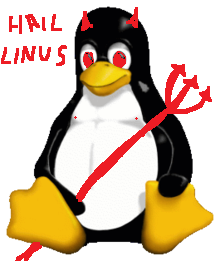

ubuntu tuhoaa mielen ja centos
linus torvalds=saatanan sikiö
Linus Torvalds – bastard
"I’m a bastard. I have absolutely no clue why people can ever think otherwise.
Yet they do. People think I’m a nice guy, and the fact is that I’m a scheming,
conniving bastard who doesn’t care for any hurt feelings or lost hours of work,
if it just results in what I consider to be a better system. And I’m not just saying that.
I’m really not a very nice person. I can say “I don’t care” with a straight face, and really mean it."
I am your god
My name is Linus Torvalds and I am your god.
"I’m an egotistical bastard, and I name all my projects after myself. First Linux, now git."
I’m always right
I’m always right. This time I’m just even more right than usual.
"Some people have told me they don't think a fat penguin really embodies the grace of Linux,
which just tells me they have never seen an angry penguin charging at them in excess of 100mph.
They'd be a lot more careful about what they say if they had."
TÄÄLLÄ ON SKRIPTI JOKA TOIMII : )